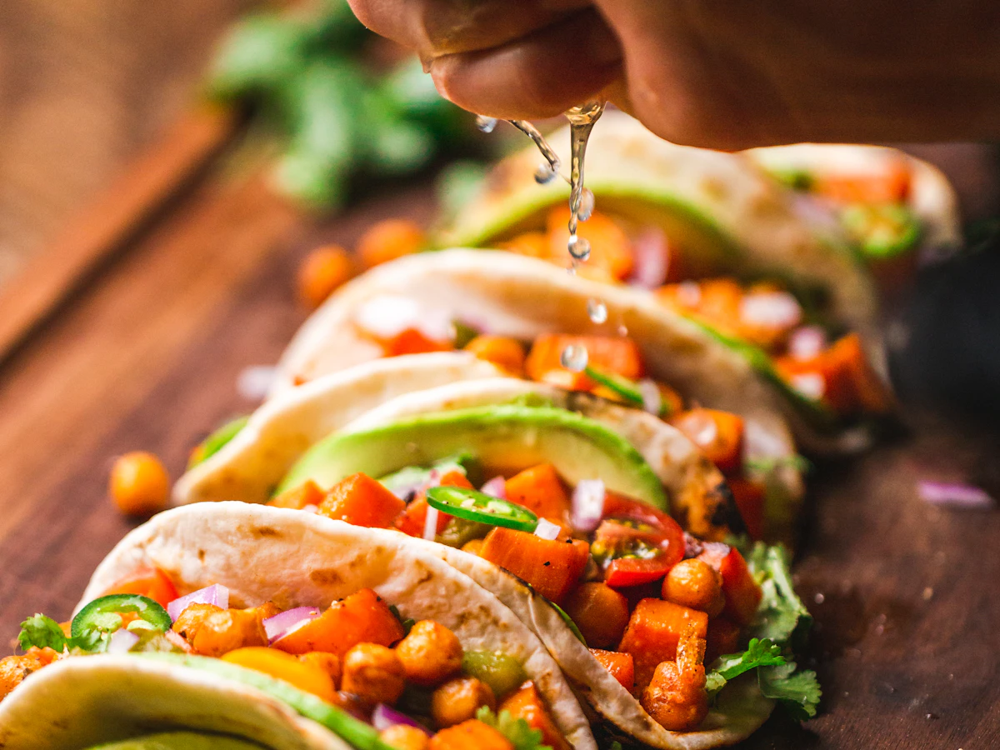

Menú QR tradicional
Un documento dentro del teléfono.
- Abre un PDF
- Texto pequeño
- Sin recomendaciones
- Sin disponibilidad actualizada
- Sin personalización guiada

Menú interactivo para restaurantes
El menú que presenta mejor cada plato y ayuda al cliente a decidir.
Una capa visual para el QR o la tablet del restaurante, conectada con el pedido o pago que ya utiliza.
El problema
Muchos menús QR trasladan el papel al teléfono sin aprovechar lo que una experiencia digital puede resolver.
Antes y después
Menú QR tradicional
Dishly
Cómo funciona
El cliente navega platos reales, categorías, ingredientes y disponibilidad.
El asistente de elección filtra preferencias y explica cada recomendación.
Extras, cambios y notas quedan reflejados en el pedido.
Dishly transfiere al flujo de pedido o pago configurado por el restaurante.

Demo del comensal
Explora Casa Marea, pide una recomendación, personaliza un plato y completa la transferencia simulada.
Entrar al menúControl del restaurante
Este teaser representa el panel que controlaría el restaurante. No es un dashboard conectado.
Los controles son interactivos para ilustrar el concepto. Los datos y cambios permanecen únicamente en esta demostración.
Complementa al POS
Presenta el menú, guía la decisión y prepara el pedido. Después continúa al POS, pago, formulario o flujo que el restaurante haya configurado.
Demo personalizada
Carta, logo, colores, fotografías y flujo actual.
Organizamos platos, recomendaciones y una dirección visual propia.
Validamos la experiencia antes de hablar de una implementación.
Siguiente paso
Preparamos una demostración local con tu carta y tu identidad, sin conectar sistemas reales.